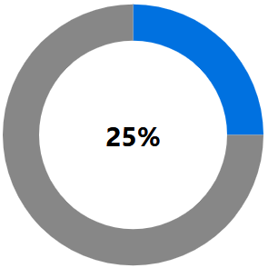

Secure government web services
Web security is critical in providing services online.
Check government website security levels
Which organizations or domains meet requirements.
How government sites can become more secure
Detailed process for government sites to become compliant.
Policy notice (ITPIN)
Information Technology Policy Implementation Notice: Implementing HTTPS for Secure Web Connections.
Contacts for more information
For government or the public, get in touch for questions or comments.
Hypertext Transfer Protocol Secure (HTTPS)
How to recognize secure sites.
